Konsultan Nutrisi
Memilih Rencana Diet
Hai! Namaku Sinta dan aku adalah ahli gizi profesional.
Jawab beberapa pertanyaan ini supaya aku bisa memberitahu kamu berapa berat badan ideal-mu dan betapa mudahnya berat badan itu dicapai.
Konsultan Nutrisi
Konsultan Nutrisi
Memilih Rencana Diet
Hai! Namaku Sinta dan aku adalah ahli gizi profesional.
Jawab beberapa pertanyaan ini supaya aku bisa memberitahu kamu berapa berat badan ideal-mu dan betapa mudahnya berat badan itu dicapai.
Hai! Namaku Sinta dan aku adalah ahli gizi profesional. Aku telah mengembangkan sistem penurunan berat badan yang unik dan ingin membagikannya dengan kalian. Jawab beberapa pertanyaan ini supaya aku bisa memberitahu berat badan ideal-mu, merancang rencana makan yang sehat dan frekuensi beban latihan fisik-mu. Kita mulai saja ya? 
Beritahu aku namamu dong? Masukkan nama kamu
Kamu itu: Pria Wanita
Menurut statistik, pria mulai mengalami kenaikan berat badan setelah usia 33 tahun. Berapa usia-mu? Masukkan usia-mu
Menurut statistik, wanita mulai mengalami kenaikan berat badan setelah usia 33 tahun. Berapa usia-mu? Masukkan usia-mu
Dan tinggi badan-mu. Iya! Aku tertarik mengetahui semua hal tentang kamu!  Masukkan tinggi badan-mu dalam sentimeter
Masukkan tinggi badan-mu dalam sentimeter
cm. Diterima! Seberapa sering kamu mengukur berat badan-mu sendiri? Berapa angka yang ditunjukkan skala timbangan terakhir kali kamu menimbang? Masukkan berat badan-mu dalam kilogram
Kurasa aku sudah bisa menebaknya, tapi aku perlu memperjelasnya sedikit lagi. Masukkan jenis bentuk tubuh-mu.

Perkiraanku benar! Tahukah kamu bahwa dengan bentuk tubuh yang kamu miliki sebaiknya kamu tak melakukan diet? Berat badan yang turun selama diet akan kembali dalam waktu sebulan. Kuharap kamu tidak suka melakukan diet... Saya mencoba diet beberapa kali. Kadangkala saya melakukan diet Saya melakukan diet beberapa kali sebulan Saya sekarang sedang melakukan diet. 
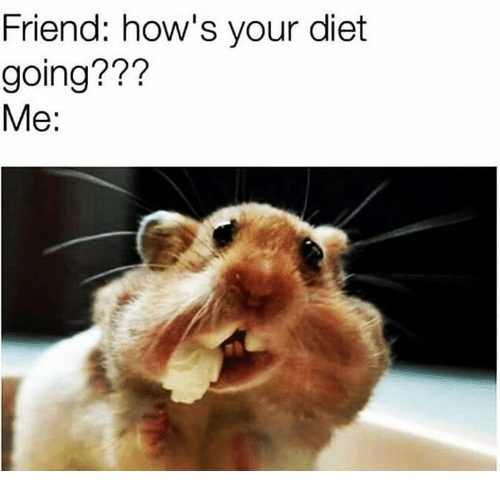
Mari kita lihat... Bagaimana dengan aktivitas fisik? Apakah kamu berolahraga ke gym? Tidak, saya menghabiskan banyak waktu duduk-duduk dan tidak banyak bergerak Saya coba berjalan lebih sering, tapi tak selalu Saya berolahraga dan lari di pagi hari Saya pergi ke gym beberapa kali dalam seminggu
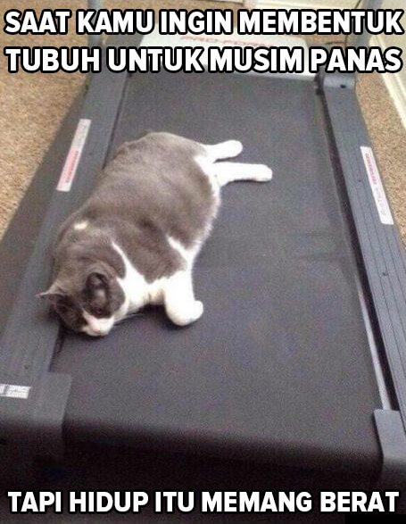
Kenyataannya, olahraga tak menjamin penurunan berat badan. Olahraga fisik akan memperkuat otot-mu, tapi tak akan membakar banyak lemak. Yang dapat memengaruhi berat badan adalah keadaan hormonal. Apa yang kamu rasakan selama masa haid? Saya makan terlalu banyak dan merasa sangat mudah tersinggung. Saya ingin tinggal di rumah saja dan tak mau pergi ke mana-mana. Saya merasa seperti biasa saja APAAAA??
Kenyataannya, olahraga tak menjamin penurunan berat badan. Olahraga fisik akan memperkuat otot-mu, tapi tak akan membakar banyak lemak. Yang dapat memengaruhi berat badan adalah keadaan hormonal. Apakah kamu merasa semakin gemuk seiring bertambahnya usia? Ya, setiap tahun berat badan saya bertambah beberapa kilogram Tadinya saya gemuk Saya kesulitan menurunkan berat badan Berat badan saya tak berubah seiring bertambahnya usia
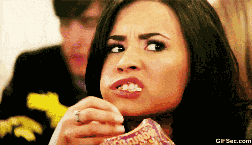
Kita hampir selesai! Beberapa pertanyaan lagi. Di foto mana aku terlihat paling cantik? :)
Iya, aku jadi ahli nutrisi untuk melangsingkan badan, jadi aku tahu semua hal tentang penurunan berat badan. Dengan bantuan sistemku, berat badanku turun 37 kg. Berapa kg berat badan yang ingin kamu turunkan? Masukkan angkanya dalam kilogram
Bagus. Sekarang beri aku waktu beberapa detik... 
Selesai! Berdasarkan datamu, aku memiliki beberapa tips untuk-mu.
Ingat apa yang saya bilang padamu tentang diet? Diet dan rasa lapar sama sekali tidak memberikan hasil yang baik! Kamu harus makan! Perubahan mendadak dalam perilaku makan dapat mengakibatkan ketidakseimbangan hormonal... 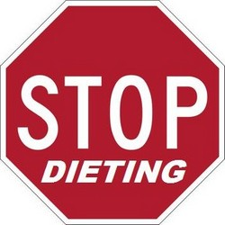
Gym akan membantumu menjaga kebugaran, tapi takkan membantumu menurunkan berat badan.
Dan, yang terpenting, air lebih penting dari makanan! Sepanjang hari, kamu sebaiknya meminum setidaknya tiga gelas cairan. Pertama, saat perut kosong di pagi hari; kedua, saat makan siang; dan ketiga, di malam hari, sebelum tidur. Tapi ada rahasianya.
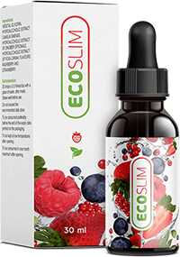
Untuk dengan cepat menurunkan kg berat badan berlebih kamu harus menambahkan ke dalam air itu beberapa tetes Eco Slim. Ini temuan besarku.
Eco Slim adalah suplemen khusus yang membantumu menurunkan berat badan. Suplemen ini menurunkan nafsu makan dan memulai proses pembakaran lemak.
Asam amino dan protein yang terkandung dalam Eco Slim mempercepat metabolisme dan mulai melawan timbunan lemak langsung setelah memasuki tubuh. Berkat ini, penurunan berat badan akan jadi cepat dan aman.
Jika kamu sudah mencapai akhirnya, kamu mendapatkan diskon 50% dengan mengeklik link ini.
Semoga sukses! Turunkan berat badan dengan bijak!
Tahukah kamu tahu bahwa kurang tidur menyebabkan metabolisme pria tiba-tiba melambat? Berapa banyak jam kamu biasanya tidur? Masukkan jumlah jam
Dengan kebiasaan tidur seperti itu sangat penting untuk makan dengan baik. Pria dengan berat badan seperti kamu harus mengkonsumsi setidaknya 2.500 kalori setiap hari. Makanan apa yang biasanya kamu makan? Daging, banyak daging berlemak dan lezat! Saya tidak terlalu memikirkannya. Saya makan apa yang saya temukan Saya mencoba makan sehat, makan lebih sedikit makanan manis dan berlemak
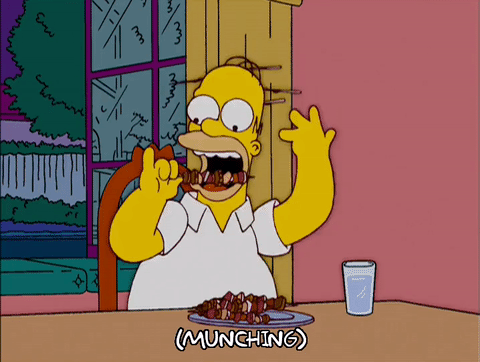
Mari kita lihat... Bagaimana dengan aktivitas fisik? Apakah kamu berolahraga ke gym?  Tidak, saya menghabiskan banyak waktu duduk-duduk dan tidak banyak bergerak Saya coba berjalan lebih sering, tapi tak selalu Saya berolahraga dan lari di pagi hari Saya pergi ke gym beberapa kali dalam seminggu
Tidak, saya menghabiskan banyak waktu duduk-duduk dan tidak banyak bergerak Saya coba berjalan lebih sering, tapi tak selalu Saya berolahraga dan lari di pagi hari Saya pergi ke gym beberapa kali dalam seminggu
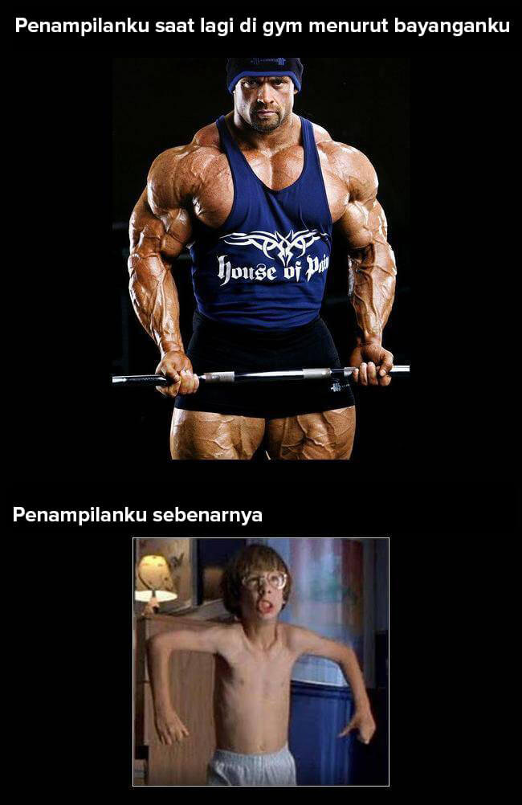
Kenyataannya, olahraga tak menjamin penurunan berat badan. Olahraga fisik akan memperkuat otot-mu tapi tak akan membakar banyak lemak. Yang dapat membantumu melangsingkan badan dengan cepat adalah seks rutin karena pelepasan hormon tambahan ;)
Seberapa sering kamu berhubungan seks?  Setiap hari, saya buas di atas ranjang Beberapa kali dalam seminggu Beberapa kali dalam sebulan Selalu sendiri
Setiap hari, saya buas di atas ranjang Beberapa kali dalam seminggu Beberapa kali dalam sebulan Selalu sendiri 
Kita hampir selesai! Beberapa pertanyaan lagi. Dari kedua wanita ini yang mana yang mau kamu ajak kencan? :)
Keduanya adalah fotoku. Iya, aku jadi ahli nutrisi untuk melangsingkan tubuh, jadi aku tahu semua hal tentang penurunan berat badan. Dengan bantuan sistemku, berat badanku turun 37 kg. Berapa kg berat badan yang ingin kamu turunkan? Masukkan angkanya dalam kilogram
Bagus. Sekarang beri aku waktu beberapa detik...
Selesai! Berdasarkan datamu, aku memiliki beberapa tips untuk-mu.
Ingat apa yang saya bilang padamu tentang diet? Diet dan rasa lapar sama sekali tidak memberikan hasil yang baik! Pria itu harus makan! Perubahan mendadak dalam perilaku makan dapat mengakibatkan ketidakseimbangan hormonal dan masalah dengan potensi seksual... Ingin mulai menurunkan berat badan? Berhubungan seks lebih sering.
Gym akan membantumu menjaga kebugaran, tapi takkan membantumu menurunkan berat badan.
Dan, yang terpenting, air lebih penting dari makanan! Sepanjang hari, kamu sebaiknya meminum setidaknya tiga gelas cairan. Pertama, saat perut kosong di pagi hari; kedua, saat makan siang; dan ketiga, di malam hari, sebelum tidur. Tapi ada rahasianya.
Untuk dengan cepat menurunkan kg berat badan berlebih kamu harus menambahkan ke dalam air itu beberapa tetes Eco Slim. Ini temuan besarku.
Eco Slim adalah suplemen khusus yang membantumu menurunkan berat badan. Suplemen ini menurunkan nafsu makan dan memulai proses pembakaran lemak.
Asam amino dan protein yang terkandung dalam Eco Slim mempercepat metabolisme dan mulai melawan timbunan lemak langsung setelah memasuki tubuh. Berkat ini, penurunan berat badan akan jadi cepat dan aman.
Jika kamu sudah mencapai akhirnya, kamu mendapatkan diskon 50% dengan mengeklik link ini.
Semoga sukses! Turunkan berat badan dengan bijak!
Kamu masih di sana? Si manis ini dan aku menunggu jawabanmu!
Jika Renée Zellweger bisa menurunkan 15 kg! Kamu juga pasti bisa! 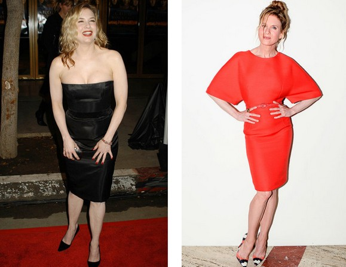
Jika Zach Galifianakis bis menurunkan 30 kg! Kamu juga pasti bisa! 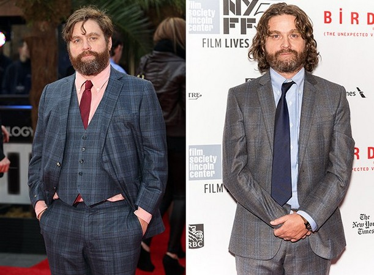
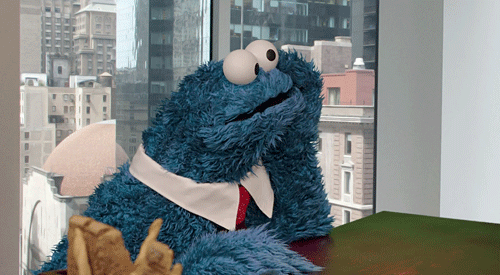
Kamu masih di sana? Si cantik ini dan aku menunggu jawabanmu!
Ayolah, aku tak percaya padamu :)
Menurutku bukan itu deh :)
Jujur saja :)
Kamu bercanda ya
Pilih salah satu pilihan
Tuliskan pesan...
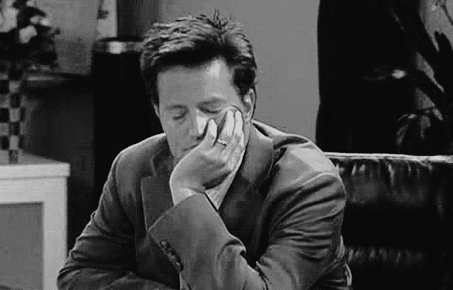
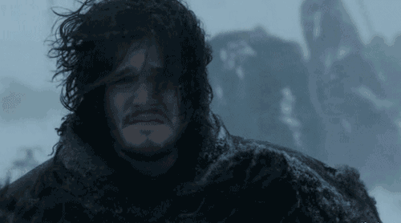
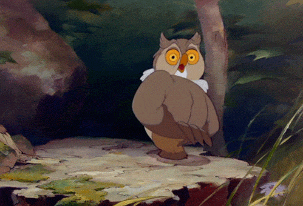
Aku senang bisa membantumu!
Kamu pasti akan berhasil!
Sampai jumpa!